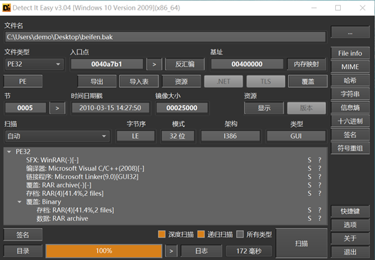
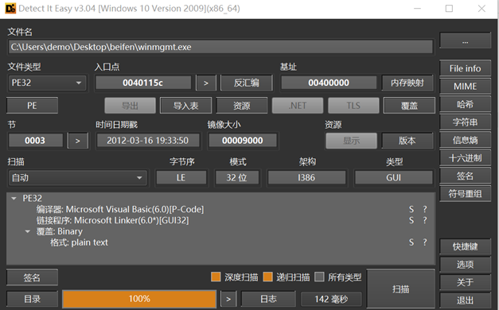
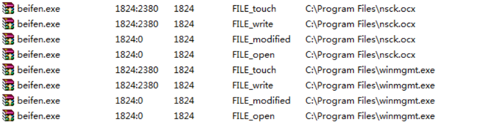
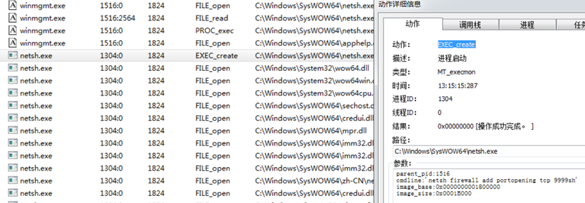
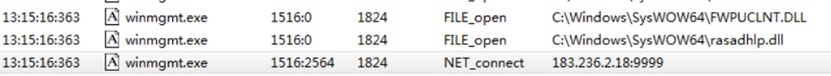
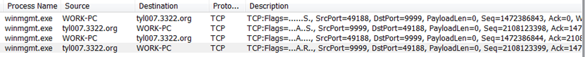

Wonbaful后门分析
一、样本信息
| 文件名 | beifen.bak |
|---|---|
| MD5 | EEAD5424C1738BD5061CF2455CEB45B7 |
| SHA256 | 8fe4f4b4f7ea39f63465d1eff48a1079cbf0846fa27c00b45b596e898ae927b3 |
| 文件大小 | 151,440 字节 |
| 病毒类型 | Backdoor:Win32/Wonbaful.A |
经初步分析，上述恶意文件为PE文件格式的备份文件，修改后缀后实际为SFX自解压文件，可直接执行。
执行后会释放nsck.ocx（Microsoft Winsock Control DLL）和winmgmt.exe（后门程序主体）到“C:\Program Files\”，并执行winmgmt.exe。
winmgmt.exe主要功能为连接C&C地址tyl007.3322.org，等待接受指令，指令包括获取受控主机名、执行DOS命令、弹窗、通过ftp获取文件等。
通过搜索相关特征值结合威胁情报，决定采用Microsoft的命名方式，将该恶意文件称为Wonbaful后门程序。详情如下：
二、样本分析
如上所示beifen.exe文件内包含两个PE文件，经分析nsck.ocx为微软官方的网络编程接口动态链接库文件，作用是为winmgmt.exe提供网络接口方法。

winmgmt.exe包含后门程序主体功能，使用Visual Basic编写，详细信息包含Autocad。
运行beifen.exe程序后,首先会释放上述两个文件（nsck.ocx、winmgmt.exe）到“C:\Program Files\”路径下，并启动winmgmt.exe。
winmgmt.exe执行netsh命令，但命令格式有问题，sh应该为防火墙规则名，和指定端口之间应该有空格，不清楚原因。
通联C&C地址tyl007.3322.org:9999,但TCP连接建立握手后被服务器关闭连接。经查域名tyl007.3322.org及DNS解析地址183.236.2.18均被标记恶意。初步认为tyl007.3322.org动态域名已被回收，解析地址为动态域名提供商网关地址。
 因为后门程序没有连接到远控端，很多功能看不到，只能对该程序进行静态反编译。


执行远控端haoma命令，对受控主机进行备注

执行DOS命令

发起弹窗

通过ftp协议窃取文件

删除重启后门程序

三、IOCs
MD5:
EEAD5424C1738BD5061CF2455CEB45B7
6CDE9FDAF329997DFA266EC903B46EE0
C&C:
tyl007.3322.org
183.236.2.18
本博客所有文章除特别声明外，均采用 CC BY-SA 4.0 协议 ，转载请注明出处！